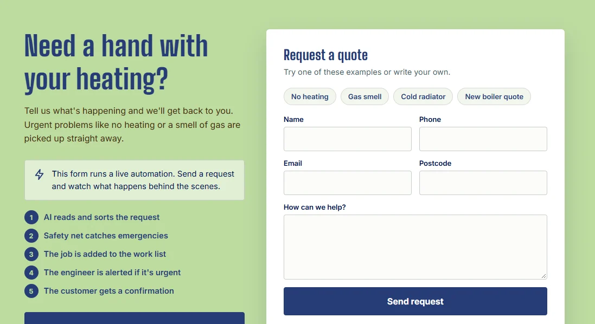
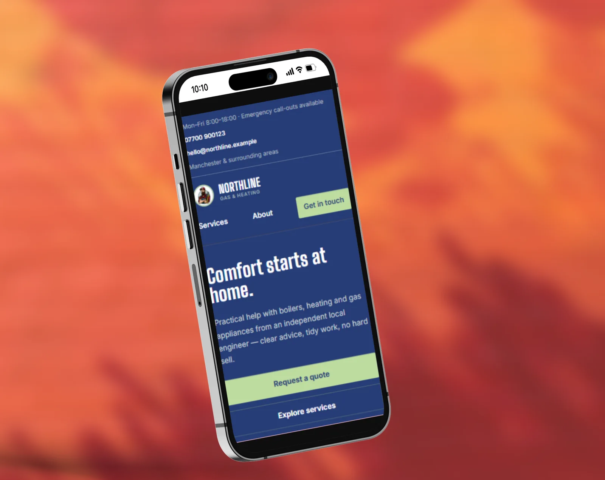

Website and workflow automation
Northline Gas & Heating
A website for a heating engineer, with a quote form that sorts every request in seconds and flags emergencies straight away.
- My roleDesign, development and automation
- TypeBusiness website and Make scenario
- StackHTML, CSS, JavaScript, Firebase, Make, AI, Google Sheets





The problem
A one-person heating engineer cannot read emails while working on a boiler. Urgent jobs, like no heating or a smell of gas, sit unread between routine quote requests, and the customer rings someone else. The requests are also spread across an inbox, with no single list of jobs.
What I built
- The website: opening hours, emergency call-outs, phone, email and the area covered are on the first screen, followed by a "Request a quote" button, trust points and a short list of services. It works on any device.
- The automation: the quote form sends each request to a Make scenario. AI reads the message, sorts it by job type and urgency, and the request is saved to the engineer's job list. Urgent jobs are sent to the engineer straight away, and the customer gets a reply within seconds.
How the automation works
- Webhook: the website form sends name, phone, email, postcode and message to Make.
- AI step: the message is classified into JSON with the job type, urgency (emergency, soon or routine), a one-line summary and a "needs check" flag.
- Safety net: a Make filter checks for words like gas, smell, carbon monoxide, leak, burst and no heating. If one is found, the job is always urgent, whatever the AI said.
- Job list: a new row is added to a Google Sheet with the status "New".
- Router: urgent jobs send the engineer an email at once; every customer gets a confirmation email.
- Instant reply: the website shows the result to the customer on the page.
The AI instruction
The AI only labels the request. It returns JSON, so the next Make modules can use each field:
{
"job_type": one of "boiler_repair", "boiler_service", "central_heating",
"plumbing", "gas_safety_certificate", "other", ...
"urgency": one of "emergency", "soon", "routine",
"summary": "one short sentence for the engineer, max 20 words",
"needs_check": true or false
}
If you are unsure between two urgency levels, choose the more urgent one.
Never invent details that are not in the message.Making it safe when AI gets it wrong
Keyword safety net. A rule-based filter, not the AI, makes sure any mention of gas, carbon monoxide or a leak is always marked urgent.
When unsure, choose urgent. One unnecessary alert costs less than a missed emergency, so the instruction tells the AI to pick the more urgent level.
Nothing gets lost. If the AI step fails, the request is still saved to the sheet and marked "Check". Unclear messages or spam are flagged instead of guessed.
The engineer decides. The original message is always kept in the sheet. The AI only adds labels; the engineer still reads and replies.
Gas emergency number. If a customer mentions a gas smell, the automatic reply includes the National Gas Emergency number, 0800 111 999.
Testing
Before going live I ran a set of test requests through the scenario, including several emergencies, using a simple test form that posts to the Make webhook. Where a request was sorted wrongly, I fixed the AI instruction and ran the tests again.
What I would do next
- A second scenario that sends the engineer a morning summary of all new routine requests.